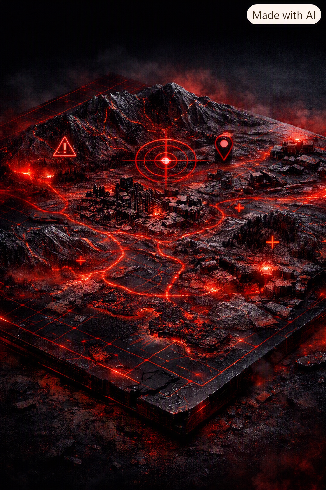

Doctrine
Built around discipline, pressure, and tactical clarity.
Grim Reaper stands as a serious operator-focused identity for players who value realism, controlled aggression, and strong clan structure.

Mission
To create a disciplined environment for milsim-minded players focused on survival and strategy.
Standard Operating Procedure
Assert dominance in all engagements while maintaining operational security. PVP wars, protection services against Griefers
Focus
DayZ and Arma Reforger form the core identity of the operation’s tactical spirit.